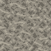

← Retour au wiki · Recettes de cette version · Blocs en relief
Les nouveaux blocs de la version 0.27.12
🦴 Tas d'ossements
Le bloc ballista:bone_pile n'est pas un cube lisse : son modèle 3D original contient 82 cuboïdes pour les os et fragments de crânes. Il a une collision vide et, une fois détruit, sa table de butin prévoit 7 os. Il est utilisé dans l'aménagement des tanières.

Aperçu de la texture source uniquement : ce n'est pas un rendu du modèle 3D dans Minecraft.
🐟 Nasse à poissons
Le bloc ballista:fish_trap requiert de l'eau à sa position et devant sa face active. L'interface a 1 case pour les graines et 4 pour les poissons. Il consomme une graine de blé à chaque capture, avec un délai interne de 120–240 s tant que ses conditions sont remplies. Quatre modèles de prise sont prévus en fonction des poissons disponibles.
B S B S . S P P P
B = bâton ; S = ficelle ; P = planche ; . = vide.
Modèles 3D extraits du JAR : nasse vide et nasse avec cabillaud.
Source : fichiers du JAR 0.27.12-candidate. Analyse statique ; jeux et serveurs non testés.